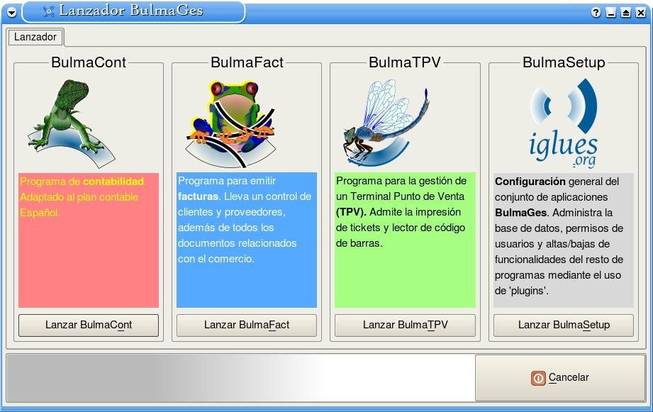
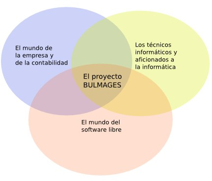

BulmaGés es una aplicación modular concebida como una herramienta completa de gestión empresarial que se compone de diferentes módulos:
Cada uno de estos módulos están pensados para funcionar de forma conjunta, si bien pueden funcionar cada uno por separado sin necesitar la instalación o ejecución de los demás salvo en los casos lógicos de dependencia.
BulmaGés ofrece la máxima calidad de una completa herramienta de gestión integrada configurable para adaptarse a las necesidades de la empresa mediante un sistema de módulos y plugins en función del sector en el que se opere y del tamaño de la organización.
BulmaGés funciona sobre cualquier plataforma (Linux, Windows, etc.) y puede ser ejecutado en local y en remoto, sin límites de licencias, empresas o usuarios.
BulmaGés es también completamente configurable y adaptable gracias a su condición de GPL, lo que garantiza la máxima adaptabilidad y una mayor independencia informática de su empresa.

Para conocer el proyecto Bulmages te proponemos que visites los siguientes apartados: